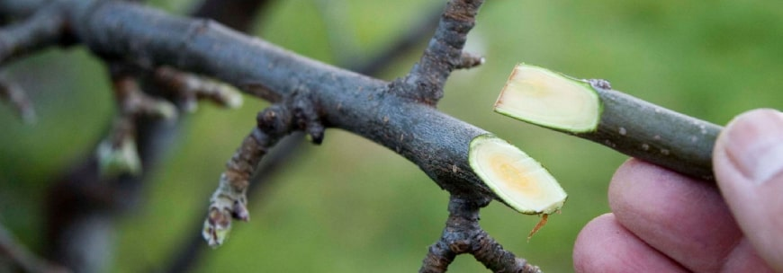
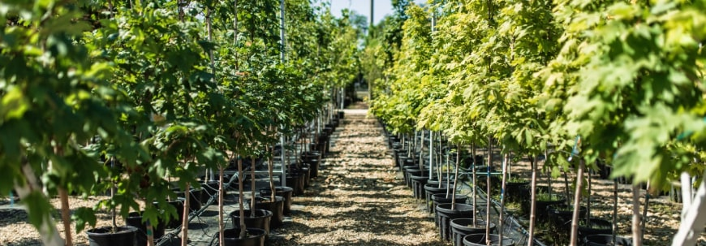
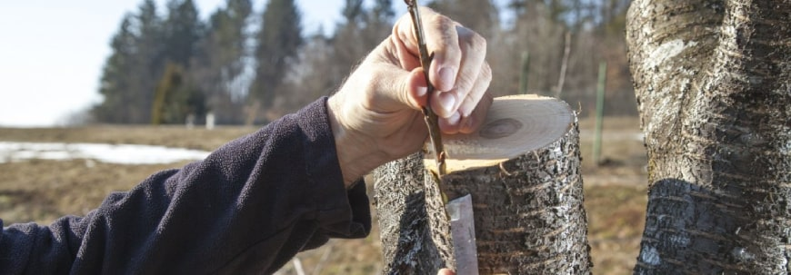
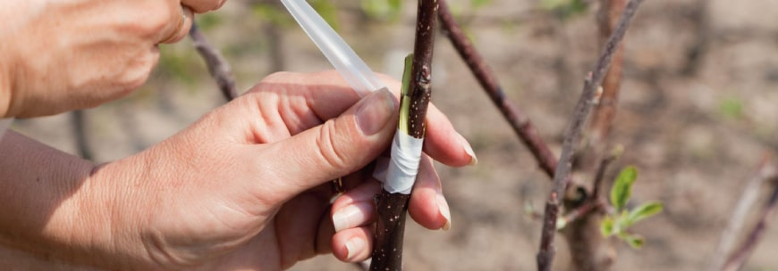
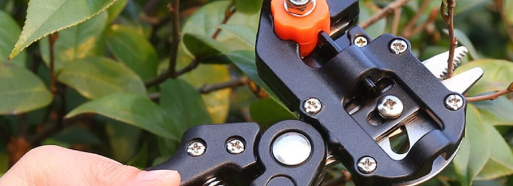
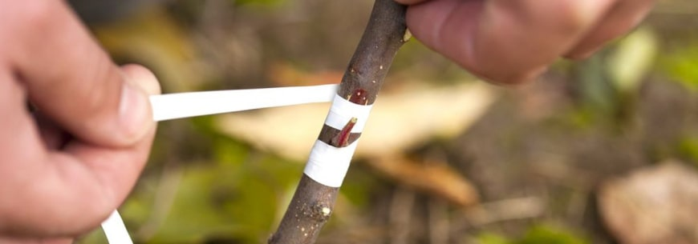
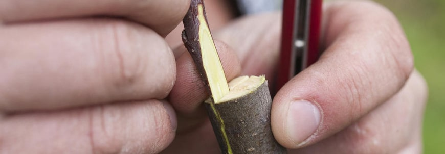

Правильная прививка плодовых деревьев
Любой садовод грезит о богатом урожае фруктов, ягод. Знаете, несложно воплотить мечты в реальность. Рядом есть качественные сеянцы? На них можно привить любимые сорта. Это будет надежным и недорогим решением. При грамотном подходе привить саженцы яблок, слив, абрикосов и других сортов просто. Расскажем, как сделать прививку саженцев. Уверяем, задача по силам даже тем, кому до профессионалов далеко!
Прививка: что это
В размножении растений помогает прививка. Она позволяет получить культурные сорта путем скрещивания привоя с подвоем. Первыми выступают почки, ветки, черенки, несущие сортовые признаки. Роль подвоя здесь выполняет та самая основа, куда приживляется привой. Берется любое деревце того же вида, что и привой. Оно несет питательные свойства растения, отвечает за устойчивость к морозам, питание, рост.
Зачем делать прививку саженцев плодовых деревьев?
Процесс облагораживает саженцы, дает возможность получить дерево определенного сорта. К примеру, была у вас летняя яблоня, а вы получили зимнюю, а из обычной сливы — желтую. Дело в том, что из растения, выращенного самосевом вы не вырастите сортовое, в этом случае саженец требует прививки.
Прививки садовых деревьев помогают улучшить зимостойкость, если вы заметили, что какие-то деревья вашего сада плохо переносят зиму.
В итоге вы получаете растение, обладающее корневой системой подвоя со всеми ее свойствами и плодами привоя.
Способы прививок саженцев: какие существуют
Есть несколько вариантов проведения процесса. Выбирайте, отталкиваясь от величины компонентов, климатических условий региона, сезона.
За кору
Прививайте за кору, если у компонентов слишком разная толщина. Периодом проведения считается время с начала сокодвижения до его активной стадии.
Обрежьте до пенька подвой. Привоем здесь будут черенки, заготовленные заранее, которые еще спят или только пробуждаются. Обрежьте их до 2-3 почек, а снизу срежьте под острым углом, длина которого — 3 см. Для эффективного проведения процесс помимо косого следует сделать горизонтальный надрез.
На пеньке нужно сделать надрез по длине сделанного ранее среза на привое. Поместите туда черенок, немного отделив кору. Сделайте обвязку. Открытые места необходимо обмазать садовым варом — раствор из парафина, канифоли, растительного масла. Можно приготовить его, или приобрести в магазине. Перед покупкой внимательно читайте состав, консультируйтесь со специалистом.
В разрез
Толщина подвоя здесь не имеет значения. Осуществлять процесс можно в любое время, кроме осени.
Таким вариантом обычно обновляют кору. Сбоку нужно вырезать сужающуюся щель. Обрежьте привой до 2 почек, срежьте с двух сторон по косой кривой. Затем вклиньте его в щель. Растение не забудьте обвязать, а открытые места обработать.
В расщеп
Подходит деревьям с грубой корой и тем, что ранее были повреждены прививкой. Для новичка данный способ — лучший вариант. Отметим, что его стоит проводить до сокодвижения.
Из подвоя сделайте пень и зачистите его ножом. Образуйте щель и вставьте туда клин. Привоем будет небольшая ветка с 5 почками. Обрежьте ее под углом с двух сторон, вставьте ее в щель, уберите клин. Подвой толще — разместите по черенку со всех сторон. Обвязка не нужна, так как зажим образуется сам. Абсолютно все открытые участки промажьте садовым варом.
Копулировка
За кору — не ваш вариант? Подойдет копулировка. Можно использовать даже молодые сеянцы. Проводится в зимний или весенний период до сокодвижения.
Привой нужно укоротить до 2-3 почек, затем на нем и подвое нужно сделать косые срезы. Их совместите, обмотайте клейкой лентой. Толщина веток равная — кладите привой сверху. Подвой толще — привой сбоку, нужно добиться совпадения коры и камбиального слоя.
Аблактировка
Здесь привой — живое дерево, куст. Прививку нужно осуществлять весной, хотя подойдет любое время вегетативного сезона. Толщина растений подойдет любая.
Толщина схожая — прививайте вприклад косыми срезами. При толстом подвое подрежьте кору, расположите туда привой. Не забудьте сделать обвязку.
Окулировка
Прививка почкой, она здесь является привоем. Очень популярный вариант среди садоводов. Почку возьмите с нужного растения, приживляйте ее на ветку, либо ствол.
Почку также нужно подготовить заранее, если вы планируете проводить процесс весной. Возьмите прошлогоднюю почку. Если окулировка летняя, возьмите срезанную в ближайшее время почку. Она приживется, переживет зиму, весной начнет расти.
Инструменты
Нож должен обладать особенной формой и иметь острый клинок для получения требуемого среза. Кухонный нож не подойдет, потому что его лезвие острое и крепкое, любая неточность испортит эффективность прививки.
Чтобы подготовить черенки и подвои, возьмите садовые ножницы. Ветки удалите сучкорезом.
Важное правило! Мойте и обрабатывайте секаторы, сучкорезы после обрезки каждого дерева. Через грязный инструмент легко передаются болезни. Можно воспользоваться спиртом.
Сколько приживается прививка
Наблюдайте за растением. В среднем по прошествии 2 недель побеги начинают расти. А спустя месяц можно понять, успешным ли оказался процесс. Если черенок засох, он не прижился. При удачной прививке срастание происходит через 2 месяца.
Обвязка
Возьмите полихлорвиниловую или полиэтиленовую пленку. Материал нарежьте лентами длиной 2-35 см, шириной 8-10 мм. В процессе роста привой утолщается. Также для обвязки можно использовать шпагат или лейкопластырь на тканевой основе.
Если обвязка плотная, то есть риск того, что она будет впиваться в кору. Рекомендуем ослабить ее через 8-12 дней. Убирать ее совсем следует только будущей весной.
Как ухаживать?
Черенки начинают расти спустя 12 дней. После полного срастания ниже его места пробуждаются почки. Появляющиеся из них побеги нужно удалять, чтобы черенок продолжал развиваться.
Побеги, образующиеся на черенке, необходимо прищипывать, отрывать травянистую верхушку. Так формируются новые ветки, крона дерева.
Обвязка не должна врезаться в крону. Будьте внимательны, может случиться так, что черенок может обломиться от солнца, ветра или птиц. Сняв обвязку, заметили перетяжку на черенке — сделайте 2-3 продольных надреза, обработайте их, снова обвяжите. Ткани помогут выровнять кору. Эту обвязку ослабьте спустя месяц, но уже не убирайте.
В последний месяц лета ограничьтесь прищипыванием 2-3 верхних листьев, чтобы подготовить побеги к заморозкам.
Уделите внимание подкормкам, поливам, содержащим фосфорные, калийные удобрения.
Распространенные ошибки?
Порой садоводы с небольшим опытом ошибаются. Мы собрали частые недочеты в работе, чтобы вы их точно не допустили.
1. Неподготовленные инструменты
Заранее приготовьте и инструменты, заточите их, проверьте исправность работы. Перед процессом помойте руки, не трогайте сделанные срезы, чтобы избежать пагубного влияния на растение.
2. Медленная работа
Процесс длится около 20-30 секунд. Если делать все медленно, то поверхность среза может подсохнуть, окислиться. Подготовьте подвой, срез. Также отметим, что стоять следует спиной к солнечному свету, так черенки не успеют высохнуть.
3. Короткий срез
Недостаточная величина места соприкосновения компонентов из-за маленького среза — неудачный результат.
4. Плохие черенки
Черенки стоит подготовить осенью или ранней весной. Отслеживайте их сохранность, так как есть риск высыхания, подмерзания и образования плесени. Рекомендуемая температура хранения — 0-3 градуса выше нуля.
5. Удаление всех ветвей на подвое
Нельзя срезать все ветви. Так вы лишите растение питания. Прививка погибнет из-за отсутствия органических веществ.
Итоги
Таким образом, из этой статьи вы узнали о способе размножения плодовых растений, важных нюансах проведения. Грамотный процесс приведет вас к саду, богатому различными фруктами. Важно, чтобы компоненты были одного вида. Соединить вишню с грушей или персик с яблоком не получится. Хотите вырастить яблоню? Нужно взять яблоню. Чтобы вырастить боярышник, подойдет груша, а вот груша не привередлива, тут подойдет яблоня, рябина, кизильник. Придерживайтесь простых правил и, а после радуйтесь урожаю фруктов!